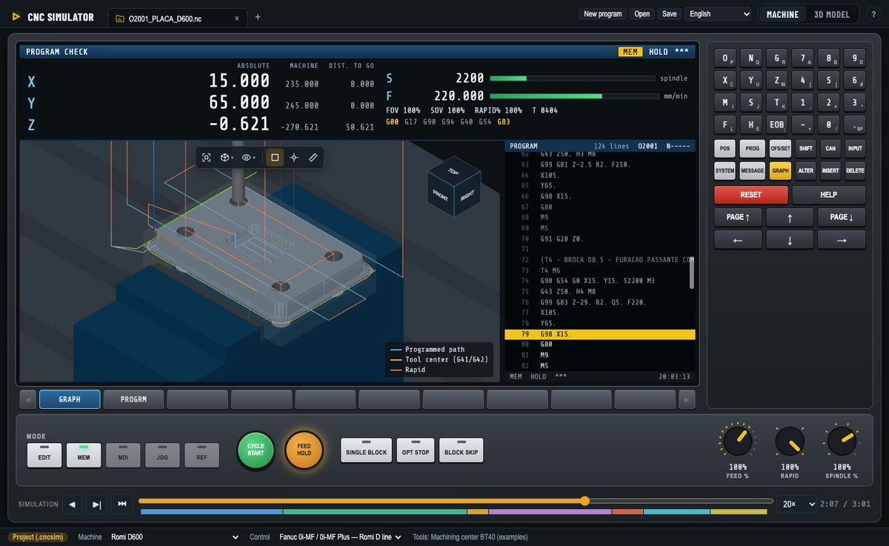
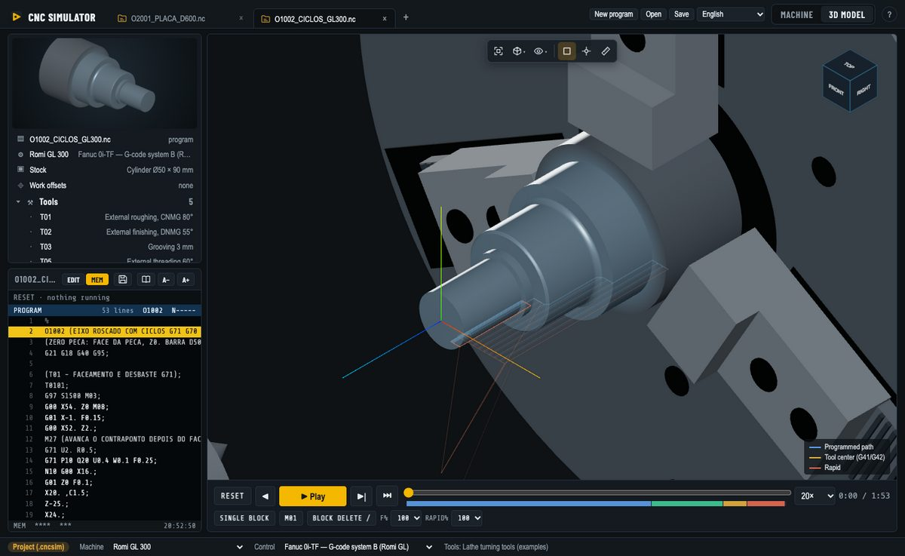
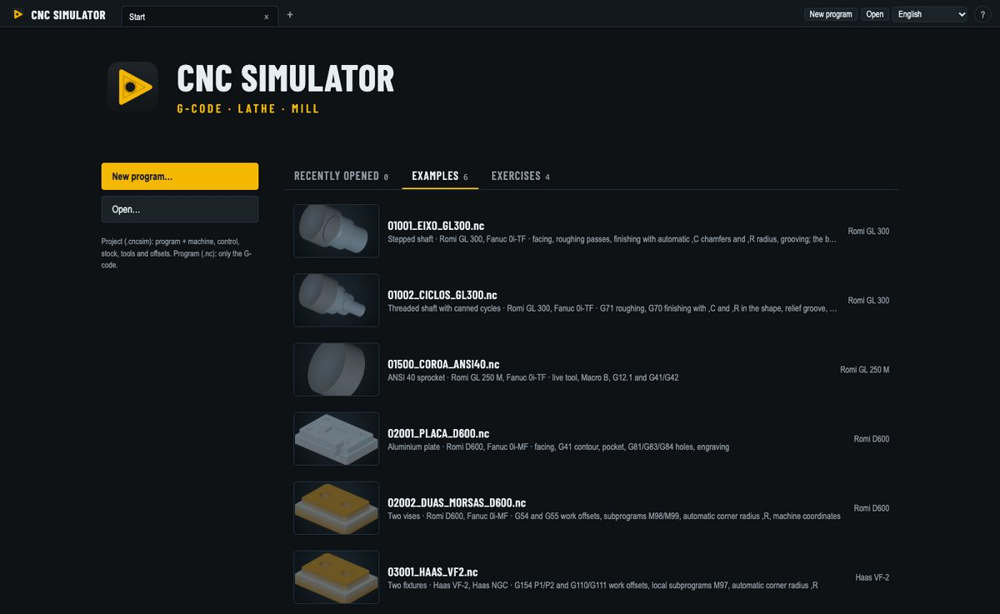

G-code · Lathe · Mill
Free CNC simulator to learn and test G-code
Run lathe and machining center programs as on the machine: Fanuc, Mitsubishi and Haas controls, Macro B parametric programs, the control’s own alarms and collision checks, in 3D. No machine needed.
v0.19.1 · The app is not signed: on Windows choose More info → Run anyway; on macOS right-click the app → Open.

Who it is for
CNC students
Write a program, run it block by block and see what each code does and which alarm the control would give, without risking a machine.
CNC programmers
Check what the CAM post-processor made before it reaches the machine: alarms, travel limits, holder and chuck collisions, tool offsets.
Teachers and technical schools
Free for every student to install at home, with lathe and machining center examples and guided exercises.
Parametric programming
Learn and test Macro B: variables, IF/WHILE and G65 calls run as on the control.
Lathe and machining center simulation


- G-code like the control: Fanuc, Mitsubishi and Haas dialects, canned cycles, subprograms (M98/M99, Haas M97), G41/G42 cutter and nose radius compensation, polar interpolation G12.1.
- Lathe cycles: G71/G72 roughing, G73 pattern repeating, G70 finishing, G90/G94 single cycles, G76 threading and G32 thread cutting.
- The control’s alarms: program errors stop at the block with the control’s number and message (for example PS0010 IMPROPER G-CODE).
- Material removal in 3D: the bar is turned and the block is milled as the program runs; a picture of the finished part.
- Collisions: holder into the stock, tool into the chuck jaws; travel limits from the machine’s own travels.
- Tool and work offsets: OFFSET screen with H/D or lathe geometry and wear, G54–G59, G54.1 and Haas G154, G10.
- Operator panel: single block, optional stop M01, block delete, feed, rapid and spindle override knobs, breakpoints.
- Learning mode and exercises: every G/M code explained on hover; exercises checked against the expected part.
Machines and controls included
Romi GL 250 M and GL 300 lathes and Romi D600, D1000 and D1250 machining centers with Fanuc 0i; Mitsubishi M80 lathe and machining center; Haas VF-2 and VF-5/40 with the Haas NGC control; a generic 3-axis machining center. Each machine and control is a JSON file: see the contributing guide to add yours. All the codes of each control are in the G and M code reference.
Frequently asked questions
Is CNC Simulator free?
Yes. It is free and open-source software under the GPL-3.0 license: no account, no ads, no time limit.
Which systems does it run on?
Windows 10 and 11, macOS (Apple Silicon and Intel) and Linux (AppImage and .deb).
Which CNC controls does it simulate?
Fanuc 0i-TF (lathe) and 0i-MF (machining center), the Romi GL and D lines, Mitsubishi M80 lathe and machining center, and Haas NGC mill. Machines and controls are JSON files, so new ones can be added.
Can I check a CAM program before running it on the machine?
Yes. Open the program, pick the machine and control, and run it: the simulator stops on the control’s own alarms and warns about travel limits, holder and chuck collisions and tool offsets.
Does it run parametric programs (Macro B)?
Yes: variables, math functions, IF/GOTO, WHILE/DO loops and G65 macro calls run as on the control.
Can I learn CNC programming with it?
Yes. The machine screen looks like a control, with MDI keys and an operator panel; the learning mode explains every code; and guided exercises check your program against the expected part.